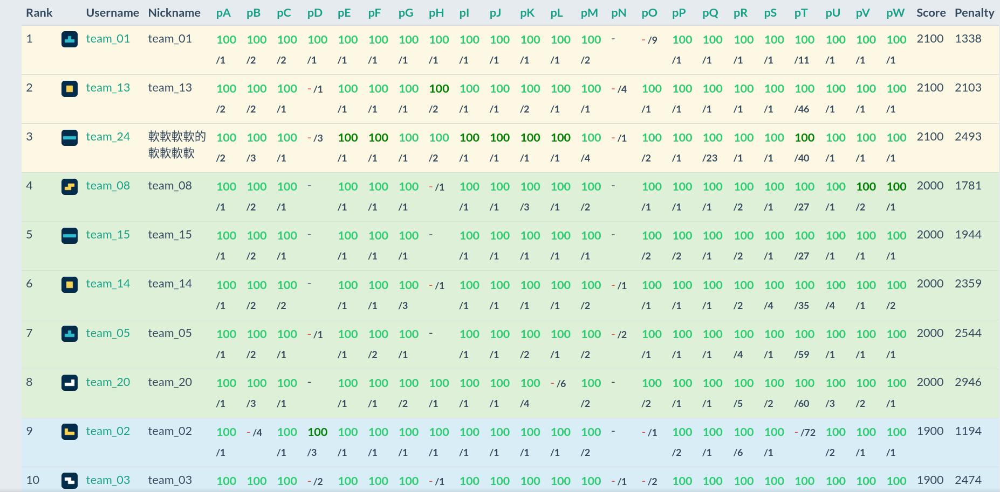
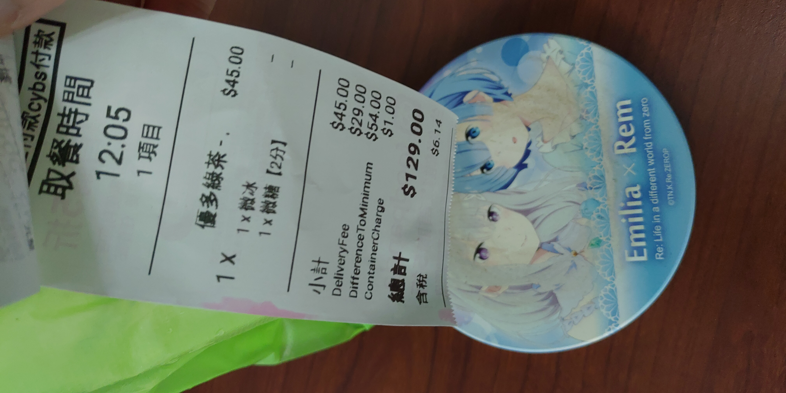
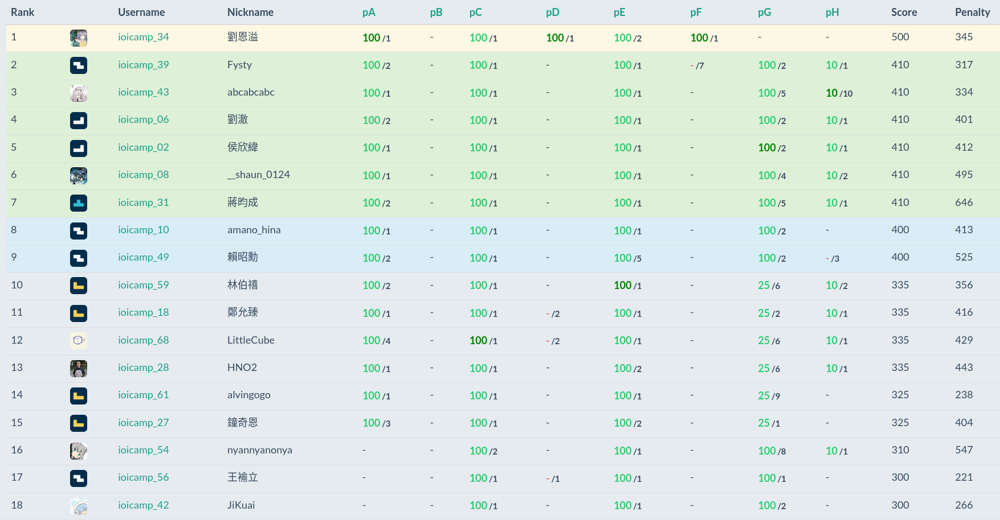
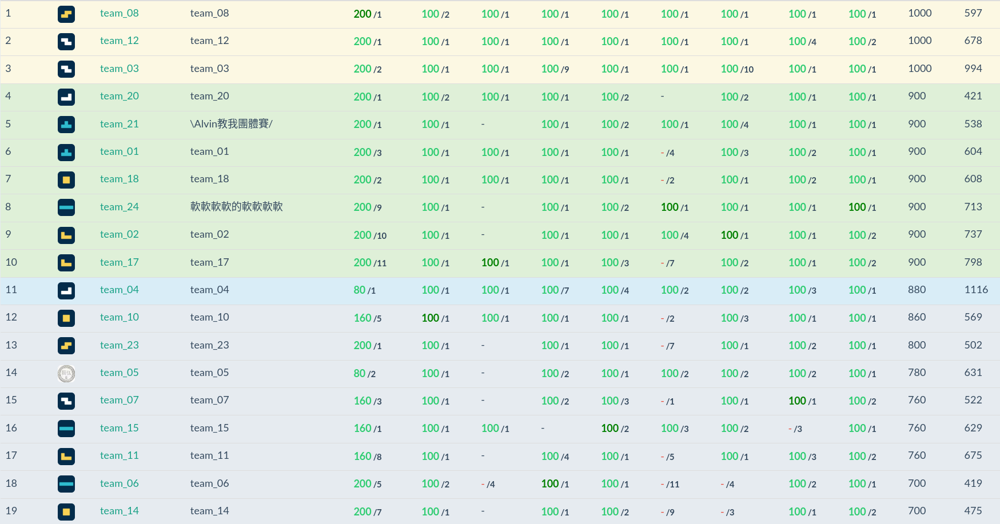

2022IOIC
因為覺得去年分五天講實在造成文章數有點過多，所以今年決定寫在一起。
前言
今年 IOIC 終於到啦！雖然很遺憾的在前幾天轉成了線上。
所以變成主要訊息和團體賽等等都在 discord 告知，然後上課用 google meet…
交大的 PCCA 剛好也撞期了，可是看起來 IOIC 人多很多所以就來 IOIC 了XD
Day 1
因為線上所以很理所當然沒有報到，但是時程表不變，所以就變成可以晚一點起床。
今天的行程主要是早上的經驗分享，下午的資料結構以及晚上的團體趣味賽。
(這不是）經驗分享
今年是由 Darryl Ho 大大來分享OAO，主要就是提到他自己的歷程，然後他建議在 IOIC 期間可以怎麼最大化自己的學習效果。
然後也由總召來宣佈了一些規則已經注意事項，蠻有趣的是因為線上，所以就多了一個 Flag 活動，具體來說，在營隊的各個地方會出現一串具有 flag 格式的字串，第一個上傳這個字串到表單的人可以獲得一杯外送飲料w
這次營隊有 72 人，不知道有沒有機會分到一杯（
也講到這次有特殊的 ioicamp 賽制，也就是 IOI 先比分數，但是又用了 penalty，感覺有點像是 GCJ 可是又沒很像。
話說他有提供一個主觀的 CF rating 對照 TOI 程度的表，他上面寫了二階需要 2400 的實力，可是我的 rating 甚至不到 2200，我果然不該進的@@
他高中時的訓練強度好高orz，我覺得自己根本撐不住這麼硬的強度。
破冰-gartic
為了在線上的情況下不要跟團體賽的隊友太尷尬，所以他們準備了一個 gartic 題庫然後讓大家進去玩。
然後的確我們也在這個時候講了蠻多話的(?)，看來應該是有破冰作用。
或者可能是 darren 跟 koying 本來就有點認識吧，總之到後來我們也有蠻多話題可以聊的。
雖然我們一開始話題根本對不上，因為 gartic 一個房間的人數限制導致我們必須奇數隊偶數隊在不同房間，然後我笨到跑錯房間，大概第一局快結束的時候我才發現。
gartic 有各種競程的資結算法之類的，然後都會看到一些奇怪抽象的圖畫w
比如時間線段樹就是畫一個線段樹然後旁邊畫時鐘。
flag get!
這邊有一個小插曲，在我吃完午餐的時候回到了電腦前面，想說趁還沒上課前先把講義習題寫一些。
所以就上了 CF 寫題目，寫完這題後我想說離上課已經快了，應該有人也在先寫講義題目，所以就戳了好友的 submission 看有沒有人在寫什麼。
結果只有看到講師的蛋餅有寫題目，大概是等等上課的題目吧我猜？
不過往下滑後我看到了他傳了 Compile Error，而且還在同一題傳四次。想說有點怪所以我就點開來看了。
不點還好，一點嚇到：這不是 flag 的格式嗎？
把他上傳之後真的拿到了飲料XD
真的是有夠幸運的，沒有什麼找或者搶的過程，單純就是剛好看到。
後來發現蛋餅是預計在基礎資結開頭的自介提供這個搶 flag 的活動，結果在上課前被我搶掉了，有點抱歉(
資料結構
因為是線上所以可以基礎進階的兩邊一起聽；進階主要感覺跟去年差不多，所以應該是再聽一次來讓自己更加了解；基礎則是有一些是我沒看過的。
進階的前面聽得很順，後面題目的部份今年多講了好幾題，然後都好難orz
根本沒什麼吸收，好痛苦。看到大家都在熱烈的討論作法，就我連上一題的思路都還沒好好了解:(
上了整節課之後，原本會的還是會，但是不會的那些卻感覺沒什麼聽懂QQ
大概是我太笨吧。
基礎的貓樹內容意外好簡略，可能是講師也沒有想太細講這個吧，畢竟看起來就不太會用到(?
可是我覺得有點酷，之後應該會好好了解一下這東西。
團體趣味賽
題目有 23 題，超多zzz
覺得自己打得有點差，開題根本沒開到，整場都在跟題。
想題目也是，盯著他的 code 很久才發現可以直接硬做。連圖論最基本重邊能讓很多解爛掉這件事都能忘記。
也有很多時間都是在亂看題目然後腦袋放空，只要 random 亂生數字的題目也能想正規解想老半天。
幸好 koying 跟 darren 夠 carry 才讓這場名次沒太差(
最後是第 6 名收尾orz

明天早上是數學，想到就痛苦跟絕望。
Day 2
第二天了，昨天一點多才睡導致今天有點累。
今天的課是數學、圖論，比賽是個人賽。
數學
數學到底為啥沒分基礎跟進階zzz
一開始組合跟數論都是去年的東西，然後講到捲積的時候因為我真的不會複數平面所以只能聽得半矇半懂。
講到生成函數的時候就…根本不知道在幹麻。
數學好難喔。
飲料
中午的時候送來了飲料！昨天 flag 的獎勵。
他有說可以讓我點餐，限制是費用加上運費之後不能超過某個數字。
然後我就想說自己一個人喝的那就別太貪心，所以就點平常喝的 45 元多多綠茶。
結果送來的時候發現上面寫著 129 元，蛤？
才發現 foodpanda 除了運費 30 以外還有 99 元的低消，所以我就算點了兩杯也還是一樣是 129 元。
我都不知道這件事QQ，太少叫 foodpanda，早知道就點兩杯了。

贊助商
因為真的很酷所以特別講。
去年的贊助商來了後介紹他們的公司，說明他們在做什麼東西（是屬於講給大眾聽的那種，沒什麼技術細節），所以就很無趣。
結果今年的贊助商 mixerbox 居然是派前競賽選手回來演講，超酷。
他資歷超電，高中數學全國賽一等、大學 ICPC 有出國、去年的 GCJ 還打得比我好orz
然後演講居然也是分享題目而不是單純介紹產品，蠻有趣的。
雖然題目都好難喔，如果真的是公司的面試題的話那我覺得我畢業後就要失業了（
圖論
圖論有分基礎圖論跟進階圖論，可是進階圖論的東西幾乎都是我不熟的，所以我就沒有要去基礎圖論。
一開始直接介紹 dominator tree，怕。
IONC 有講過，可是之後每次我想要去翻都沒搞懂。今天再次遇到後…
我還是沒搞懂。
那些引理不配上畫圖真的好難理解，然後他又直接飛過去。
只好之後再翻翻看講義了。（有朝一日）
後面的東西就懂一點，KM 終於嘗試理解他在幹麻，只是沒完全理解。
之後又進到了 matroid，選訓聽教授講這個的時候我聽到後面直接放棄做自己的事。
今天也是zzz 我覺得我對這種抽象的東西好沒輒，感覺是時候考慮轉文組。
個人賽
超級燒雞@@
開場後先找flag（x，只是把所有題目看過後也沒有找到。
然後看記分板發現 pC 很多人做，就去看了。
一開始覺得可能是直接兩個一起排序，可是範測就錯。然後就開始想各種分正負的 case，但是都沒結果。
時間過了半個小時我還 0 分，所以決定先跳題。
另一題很多人做的是一眼就知道 SCC 縮成 DAG 後亂做的題目，可是我眼幹沒發現題目是 DAG，所以寫了 kosaraju 還寫爛，花了一些時間 debug。
已經快一個小時才把這題拿到手，在上傳前記分板已經有超過 4, 50 個人有分數了，心態頗慌，甚至在想會不會被助教關切(
後來去先戳了另一題有人做的，先隨便亂假解一頓之後就發現是線段樹就好，然後寫完之後蠻順利沒什麼 bug 就過了。
只是 zkw 居然忘記要開 2 倍空間，好好笑。
後來真的照正負亂做才把那題 pC 寫掉。
賽後發現 pC 真的是兩個排序就弄好了，我到底為啥會沒過範測，超怪。
開場過於緊張，中間左右才開始把腦袋找回來。
pA 題目名稱是簡單數學，然後的確也蠻多人做出來的，可是我真的不會數學QQ
數學好難。

明天又是組合賽局 想到就累。
Day 3
今天起床後更累了，因為昨天在想贊助商的題目想到兩點多才睡，作息越來越慘了。
今天的課是組合賽局跟 DP 跟團體賽。
組合賽局
其實意外的不會太難跟，講師把 hackenbush 拿掉了，那個去年完全聽不懂的部份。
中間有點小落後所以用跑的追上來，後面就比較沒什麼跟不上了。
今年也終於聽懂了 coin game，雖然也是花很多時間想才想通。
今年比去年聽懂不少東西還蠻開心的><
贊助商
今天也有贊助商演講，然後他是進來講解了在圖論上的某個演算法。
原來競程這些圖論的怪東西實務上是真的有機會用到的，雖然比較可惜的是他講英文我聽不太懂。
動態規劃
基礎的動態規劃直接從轉移優化開始講，然後把什麼優化技巧通通講完了，怕。
但是看到進階的好像是在講題目，所以就還是來進階的了。
結果進階的 DP 超棒。
很快就能理解到這堂課是丟題目然後讓大家一起思考，後來再把解答給出來，有點開放或者互動式的感覺(?
蠻喜歡這種上課方式的，比起亂塞東西然後一直花力氣只為了跟上課程，這樣子有真的在動腦思考。
講師也有適當的指引大家，雖然我還是有很多題目沒有完全搞懂。
不過想題目的過程果然比較有趣，比起學東西來說。
原本我是進階跟基礎的 google meet 都有開，可是在進階 dp 抽人上來講題目的時候我被抽到，然後我不小心開到了基礎 dp 那邊的麥克風講話，所以基礎 dp 的講師上課直接被打斷，我好抱歉QQ
不過感覺 IOIC 的日程很趕，所以感覺這種課比較適合放在時間比較多的資芽(?，但其實我也不知道這種上課方式放在這邊是不是好的，可能也只是我上了這麼多步調超快的趕火車課程第一次在營隊遇到這種節奏慢很多的。
團體賽
頗燒雞的。
不知道為啥這幾天的比賽都打得不是很好zzz
一開始笨到把隊友的想法打掉，後面自己寫到一半才發現隊友的想法才是對的。
或者是隊友提出了一個作法之後我覺得他假解所以不相信他，後面自己花了更多時間想了之後才發現我想的作法跟他是一樣的。
把簡單題開完之後就來寫斜率優化跟 segment tree beats。
斜率優化這題因為限制了範圍所以李超會變兩個 log，感覺應該是要讓人寫單調隊列的線性作法。
然後就花了一個小時了。
因為我完全忘記單調隊列在遇到會過期點的時候不能直接 pop_back，要先考慮過期點的位置。
感覺很久以前也被坑過，可是真的是太久以前的導致忘光光。
甚至還是把 code 拿給隊友 debug 才被指出會有過期點的問題。
原來今天的基礎 DP 有教，結果我什麼都不會反而還去進階，爛死了。
終於把斜率優化弄完後，只剩下半個小時多。
有一題看幾眼就覺得是 segment tree beats，可是看到過得隊伍有將近 20 隊，懷疑了一陣子。
但是覺得不太可能是其他的，所以就寫下去了。
然後就 debug 到天荒地老，最後只是一行的變數賦值沒弄好，然後賽中賽後共花了一個多小時在這題。
導致今天根本沒什麼時間想其他題，時間都在模板題被浪費掉了@@
因為沒把 beats 寫出來，所以名次也是遠到快要離開了銀河系。
快要墊底的第 19 名，爛到笑。
對隊友很抱歉，自己拿了兩題裸題結果花了快一輩子甚至還有一題沒寫出來。讓他們抄模板感覺都還比較好。

明天是計算幾何跟字串，基本上都不是我這次營隊想要來學習的重點，所以就大概聽一下吧(?
Day 4
昨天補題補到三點多，今天起床爆幹累。
發現昨天的 DP 是我會的題目@@，真的就是被斜率優化跟 segment tree beats 搞太久。
今天是字串跟計幾還有個人賽。
字串
表訂上可能是早上計幾，可是計幾講師的肝快爆了，所以就調課了。
因為昨天真的太晚睡導致今天太晚起床，進了 meet 已經是快九點半了，好好笑。
幸好前面在講已經會的 KMP 所以還好。
後面開始講了 Z algorithm，今天終於把這東西搞懂了 OAO，之前因為想說 KMP 和 hash 夠用所以就很懶得學這東西。
因為聽懂了 Z，所以後面的 manacher 也終於理解了，到目前為止我 manacher 真的都是直接死背 code，笑死。
後面講了 Suffix Array，我之前只有把構造 SA 的地方看完，今天也把 LCP 怎麼求給學會了。
吸收到東西的感覺還不錯(?，只是後面在講後綴平衡樹的時候我感覺有點中毒了，現在看到 SA 都會想要用這東西。
計算幾何
最怕的單元，四模時搞一題計幾搞了一大票時間拿了 0 分之後就根本沒什麼去碰計幾了。
今年的內容蠻酷的，前面有些觀念補正(?)，後面講解了幾題酷酷題目，我真的沒什麼讀計幾，所以看到大部份題目我都不會做。
不過感覺自己還是沒辦法喜歡上計幾= =;，還是覺得計幾很討厭，尤其我幾何超爛，很多二維平面的幾何模型我都沒辦法在腦中想像。
個人賽
開場看到一個賽局，打表打出來後看了五分鐘還沒看到規律就跳題了。
後來就跟著記分板開題，然後吃了一堆 penalty，不知道為啥這幾天開場都沒很順。
把題目跟完之後，手上剩兩題相對可作的：很多人過得賽局跟一題計算幾何。
因為賽局我真的不會，所以只好硬著頭皮寫了計幾。
結果整場連範測都沒過，賽後把範測丟到 ggb 後再對照一下就找到問題了zzz，然後就一發 AC。
賽中沒把範測畫出來有點虧，雖然手畫的圖要是不準感覺不會有幫助。
因為賽局幾乎全世界都寫出來了，所以沒寫出來賽局然後計幾也沒搞出來的我當然名次就在世界的底層。
明天就是正式賽了，希望我不要太雷。
Day 5
今天就只有團體正式賽，比五個小時。
燒雞燒的超級慘，看著越來越多人過了賽局，我就覺得我必須要寫出來。
可是打表出來後看起來很有特殊的 pattern 但是我找不到確切的規律。
然後就花了一個小時。
線段樹的題目也是一開場先做，作到一半發現合併的時候要維護四個答案好麻煩就先丟掉了，後面把他撿回來做但還是覺得好麻煩就又丟掉了。
心態很差所以看到裸的 SA 題目就沒有想要自己刻了，直接把講義拿來抄，雖然一發 AC 了但心態沒好轉太多。
最後面沒題目可以寫的時候去摸了計算幾何，結果想先寫個部份分卻一直 WA。
五個小時一下子就沒了，整場就在燒雞中度過，連鍵盤都沒什麼摸到。
最後收尾甚至在真的倒數幾名，讓我覺得我這幾天到底學到了什麼，突然多出了一堆人把我打爆。
總結
這次的營隊還是很有趣的啦，找 flag 的活動也蠻有創意的。
課程有聽懂一些東西蠻開心的，也知道了不少新科技可以學。
整體來說課程部份還是很不錯的。
只是題目部份除了第一天以外不是很滿意（
可能是我太爛只好抱怨題目吧，被很多題目卡導致都沒時間去想一些酷酷的 DP 之類的題目。
第一天趣味賽的題目真的蠻有趣的，玩得很開心。
隊友都是分別是一個高一的跟高二的，也才意識到自己老了，突然多了一堆後輩把我揍爛。
想說我應該能夠在團體賽的過程中教點他們什麼，結果都是我自己在燒雞甚至得他們來幫我zzz
雖然因為線上沒什麼認識什麼人有點可惜，去年實體的時候太害羞了不敢去找不認識的人。
明年不知道會不會再來一次，搞不好上了大學之後沒時間或者沒餘裕這樣投住在競賽上面，但希望能夠趁著高中階段變強一點，不要像這樣一直被打爆（